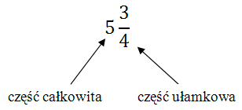

Liczba mieszana składa się z części całkowitej i
ułamkowej:  Możemy taką liczbę
zamienić na ułamek zwykły w następujący sposób: \[5\frac{3}{4}=\frac{4\cdot 5+3}{4}=\frac{23}{4}\] Jak
to zrobiliśmy?
Mianownik pomnożyliśmy przez część całkowitą i dodaliśmy do licznika. Sam mianownik
pozostał bez zmian.
\[7\frac{3}{5}=\frac{5\cdot 7+3}{5}=\frac{38}{5}\]
\[2\frac{7}{11}=\frac{11\cdot 2+7}{11}=\frac{29}{11}\]
\[1\frac{3}{4}=\frac{4\cdot 1+3}{4}=\frac{7}{4}\]
\[8\frac{2}{7}=\frac{7\cdot 8+2}{7}=\frac{58}{7}\]
\[3\frac{1}{9}=\frac{9\cdot 3+1}{9}=\frac{28}{9}\]
\[2\frac{1}{2}=\frac{2\cdot 2+1}{2}=\frac{5}{2}\]
Większość działań wykonuje się łatwiej na ułamkach zwykłych, niż na ułamkach
mieszanych, dlatego warto nauczyć się tej prostej zamiany.